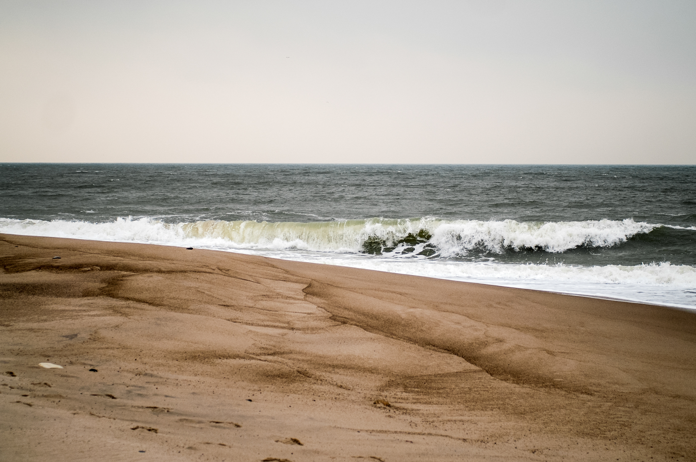
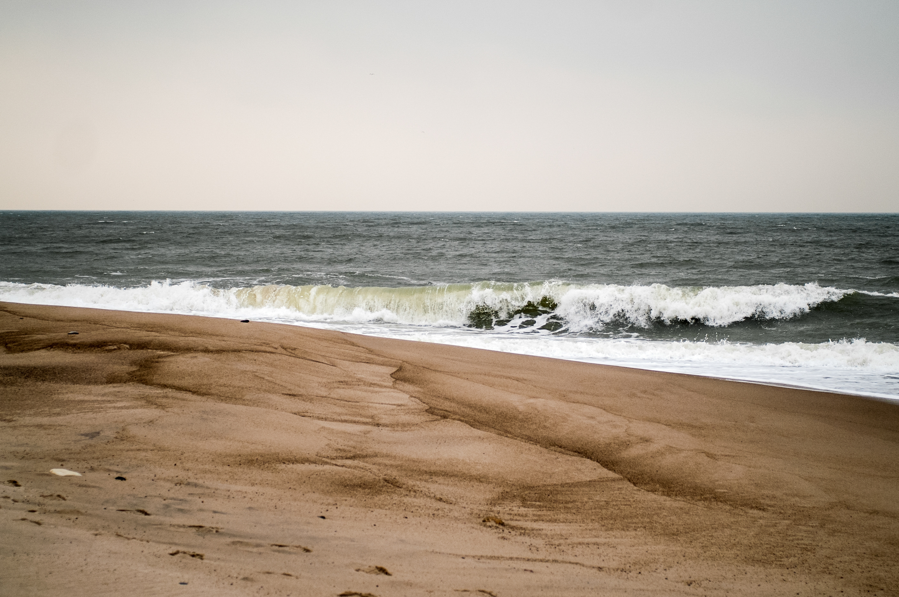

Animals
Straight To BottomLet us take a look at some of my favorite hobbies of this world: I will start with animals at this point, cuz they just make my heart jump of happines. Of course there are pros and cons, so let me introduce it to you.
Imagine the life without domestic animals: No fluffy cuddling, no wet nose boopers and no fuzzy, loose hait in your mouth, while eating. To be honest: Yes they need your care, a full amount of time and a small to lager budget of your hard earned money. But on the other hand, you would never experience the uncondicionally, honest love.
Find the animal maching to your personality and your idea of time management. If you don't want to take this responsibility on your sholders, you better not think about a dog, or a cat for example. You can go with terraristic for less time consuming hobby, but also think about the specific thermal conditions. At the end you have the difficult choice to make, how much you want to invest, how long do you want to spent time for your furry friend and very important to know is your status of allergic reaction if you are interessted in having a coated friend by your side. At first you always should search for a pet in animal shelters, because every creature is worth to get a second, third, or more chances to find the perfect forever home. Now you can ask yourself:
ARE YOU READY TO CARE ABOUT A PET?
Art & Drawings
Straight To Bottom
"The art is in the eye of the beholder."
That is probably the most mentioned sentence ever. But at the same
point, it is true. Everyone has a different view about construction,
meaning, and design to transport the inner statement to the world.
The way we feel, live and learn is as fascinating as the thinking of
each one of us. There is no fault and also no right in the way you
express your art.
You can draw pictures by hand with pencils, brushes, with your bare fingers or even with the whole body. Show your feelings and interests how you want them to appear. Use the items you feel confident with, explore your colorful vane and If you are worriing about the beginnings: dont worry! You will get better with practicing more and more.
The art community is extremly huge. Art exists since the beginning of the evolution of human beeing. So do the own point of view. You will find forums, websites, exhibitions and many more containing art, such as in everyday life. For example street art makes cities colorful and stereotypical urban at the same time. Keep your eyes open, and you will find art in every corner of this world.
CAN YOU SEE THE ART OR IS IT WASTE?
Computer & Coding
Straight To BottomThis hobby is for little workohollics like I am. Nothing will me as time intense as Web Design, Media Design and computer stuff. On your exciting path to learn the myssticle language of coding websites, you will quickly question yourself several things and slightly forget about the real world.Do you have the endurance? Can you be persistent enough? The answer is: YES YOU CAN!
Take a step back, breathe in and breathe out: It will get better soon, too. Same thing as as art-practice, you have to repeat constantly. Learn to combine your advanced knowllege. Have no fear to make mistakes, you can solve them by investigate. Nothing will be harder to continue, when you feeling down like a server, but on the other hand you will be able to change your thinking about yourself, if you come to the final project and code your lines with understanding the context. Represent your content and your design like in a more technical kind of art.
Don't make yourself crazy about this. Every language is a unique one. And no one said that it would be easy to learn it. Just try to imagine all the fabulous journeys you can conduct a user through your hardly (or maybe easly for some of you) designt and developed website like mine, just to give you an imagination of what you can create by just typing some words in clamps. Developing is no witchcraft, if you think so now. Or is it?
CAN YOU IMAGINE TO BE A MAGICIAN OF THE INTERNET?
Longboarding
Straight To BottomBalnace it the clue to this kind of hobby. To take the fear of you: A homan can learn almost everything by practicing, so you will read this a little more often on this page. If you love to get adrenaline rushing through your blood, this sport is one of the posible maching ones for you. Pushing the board with your feet, training your whole body every time you cruise through the streets, makes you healthier. Not only your brain will get more oxygen: Your musckes will getting stronger and your mindset will change, because moving at the outside with fresh air in your longues has always positive effects.
I give you a hint: Nobody is perfect, aspecialy not at the beginning. At first you should care about your safty. A longboard or skateboard is just a piece of wood with two achses and only four wheels which seperate your feet from the street. Buy yourself a pair of gloves, arm & leg guard, and for shure a good rated helmet. A board can be extremly shaky for the first tries, so prevent your body from the consequences od falling down. Extremly hard practice can push your body to its limits.
So take it calm and start with shorter sessions, skate with friends or try some new tricks, if you want it a little more challenging. Never give up when you fall. Get on the board again, as soon as possible, even if your knee is hurting a bit, you will survive it and the next time you reach your goal, you will be proud of yourself and gain confidence more and more. Your body will know, when it's enough for the day, so don't push yourself over your limits. That can be dangerous, not only for you. If you lose control over your balance or board, situations can change very quickly.
WILL YOU SPEED UP TO ANOTHER LEVEL OF BOARDING?
Music & Band
Straight To BottomMusic is like an elixier of life. The bass moving the air in your longues. The beat automatically stomping your feet. The rhythm flows to the body and hardly trying to not move. Music is so much more, than listening. It's a pleasure and joy of all body parts. As you can read, my soul is burning for the happines the music brings to me.
There are different types of music. Meanwhile an uncountable number of gengres (the categories, music is classified), because there are appearing a lot of mixed genres combined to a new one everyday. Big Band music with a full orchestra ensamble, jazzy or funky songs with twists and "questioning & answer"-games between different instrumental groups. Pop-artists are mostly performing als single artist, writing songs, finding melodies and producing with an amount of people around them to release their new hot stuff to the charts, so their music can be played in clubs and bars for the young and fresh party generation. Rock Bands are a bit harder, expressing feelings and meanings in different kinds of speed , such as metal bands which the most people would call "shouting of anger". The music-community is spreaded all over the planet and colorful like a rainbow.
At least you can try to find your passion in playing an instrument for yourself. My heart is beating for the drum kit, playing and training it the half of my life. Hit the skin-pads and crashing the cymbals is super goot to train the raction, multitasking and technical rhythm techniques. Or would you rather play the guitar or bass-guitar to change the spectrum of sounds you can create?
ARE YOU READY TO BE A ROCKSTAR?
Gaming
Straight To BottomPlaying video games is a philosophy for its own: A lot of people love it, the others hate it. Since the last years the gaming scene is expanding exponential. In the past, when the jurney of gaming onb technical devices started, the most parents thought this is only a hobby for children or youngsters, but the evolution of video games rushes in such speed, nobody can say exactly when this changed. Nowadays the most players are adults and a very very big amount of games are constructed for the older generation. FSK 18 games are showing brutal content or spladdering fluids of the inner body.
When you you start to play a game you like you can easly forget the time and float to another world or galaxy. There are all kinds of games, so everybody canfind the right one. Ego-shooter where you run in first person and (like the name sais it already) shoot other players in the digital world, to collect experience-points for upleveling or special ingame-items. Role-Play-Games where you can change everything you have not in your real life, and build a whole new community with friends or strangers in mustiplayer-mode.
But it is also dangerous, because too much gaming can have an addictive effect on some people. You have to remeber: The real life still exists and you still have to care about it. Don't flee to the other world for too long, because nobody will come to you and tell you have to do this or that now like a parent forever. Bills have to be paid and food is also important.
No matter what your favorite games will be, or if you prefer to play on the computer or console, the colorful moving interactive stories you will see, can also be productive and educating.
MAYBE YOU WILL BECOME THE NEXT LEVER PLAYER OF TOMORROW?
Traveling
Straight To BottomWho doeasn't like to travel? Ok, I think there are some peoples that really don't like traveling a lot. But on the other hand you don't need to feel guilty, if you want to see the world for your own, touch the sand with your own bare feet and breathe the soft moosed air of a forrest you always wanted to travel to. You can make a roadtrip by car, bicycle or foot, take your time to relax and refresh your powers for the life we are lifing nowadays.
Relaxing is not the only way you can explore new places and make new unknown experiences. Go out, see the beauty of this planet and smell all of the scents you would never have known without leaving the wellknown hometown. Try to communicate with other people and learn about their cultures, respect the different places where other people live and their happiness in beeing there.
But maybe you are the kind of person that always wanted to make a basejump out of an airplane, or prove yourself how brave you are and dive with the sharks in the ocean. Of course you have to save some money to have the possibility to buy some food or have a nice sleepover room at a hotel, but it's your choice now where you want to go:
TO THE PERFECT PLACE OR GET AN ADRENALINE SHOT?
 

Photography
The Last Point of my favorite hobbies I can recommend is the peaceful photography. This one is a splitting point, because some people are swearing to their realy expensive equipment and they think that's the needing thing to shoot good pictures. The truth is (just to repat myself: in my opinion) you don't need to buy a 5K camera and you will automatically make great pictures without learning the basics. Like I said before: The most important thing is practice.
Photography is not the cheapest hobby. Give me a moment to remember:
no one is perfect and no master has ever fallen from the sky.
Whatever you want to catsch up in ohne tiny moment of life: the
motive you have chosen will be well prepared. Train your eye to see
small things, maybe start with details the most people are ignoring,
than everyone will say
"Wow, I never thought about this way to see this thing like
you."
To catch the right pic at the right time you have to stay calm. If your passion will be the macro photography, where you can catch the smallest details of a plant or choose other motives, you will have to spend a bit of cash, to get good basic devices equiped for usable photographes. If you are interessted in action photography, you will need a good hight resolution video cam and the right reflexes. With enough time and patience you will get wonderful pictures for your photo album.SO DO YOU WANT TO CATCH THE BEATY IN A PICTURE?
I hope I could've helped you choose the right spare time activity for you and your personal habits.
Follow me on Social Media for more content.